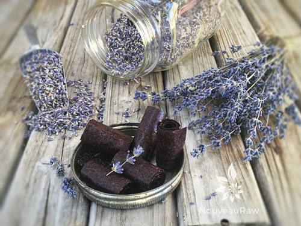

Spiced Vanilla Blueberry Fruit Leather
~ raw, vegan, gluten-free, nut-free ~
The base of this fruit leather is blueberries but the partnership between the cinnamon and vanilla really marries the whole thing together.
As you read through the ingredient list, you will find that I used Irish Moss gel in this recipe. I was experimenting. I wanted to see if it would make any difference in the texture of the leather. It seemed to “fluff” it up a tad, but if you can’t get your hands on Irish Moss, this recipe will work without it.
If blueberries are not in season when you stumble upon this recipe, you can always check the freezer section at your local grocery store. Just make sure to purchase organic blueberries, fresh or frozen. Berries hold a lot of pesticides, and we want to minimize that for sure.
Ingredients:
yields 3 cups puree
- 4 cups fresh organic blueberries
- 2 Tbsp chia seeds, ground
- 1 tsp ground Ceylon cinnamon
- 1 tsp liquid stevia
- 1 tsp fresh lemon juice
- 1 Tbsp vanilla extract
- 1/2 cup Irish moss gel
Preparation:
- In a spice or coffee grinder, grind 2 Tbsp chia seeds into a powder and set aside.
- Puree the berries, cinnamon, stevia, lemon juice, and vanilla in the blender or food processor until smooth. Taste and sweeten if needed. Keep in mind that flavors will intensify as they dehydrate. When adding a sweetener do so 1 tbsp at a time, and reblend, tasting until it is at the desired taste. It is best to use a liquid type sweetener. Don’t use a granulated sugar because it tends to change the texture.
- Add the chia seeds and Irish moss (if using).
- Pour the puree into a bowl and let it rest for at least 10 minutes. This will allow the chia seeds to thicken the batter up a little.

- Spread the fruit puree on teflex sheets that come with your dehydrator. Pour the puree to create an even depth of 1/8 to 1/4 inch. If you don’t have teflex sheets for the trays, you can line your trays with plastic wrap or parchment paper. Do not use wax paper or aluminum foil.
- Lightly coat the food dehydrator plastic sheets or wrap with a cooking spray, I use coconut oil that comes in a spray.
- When spreading the puree on the liner, allow about an inch of space between the mixture and the outside edge. The fruit leather mixture will spread out as it dries, so it needs a little room to allow for this expansion.
- Be sure to spread the puree evenly on your drying tray. When spreading the puree mixture, try tilting and shaking the tray to help it distribute more evenly. Also, it is a good idea to rotate your trays throughout the drying period. This will help assure that the leathers dry evenly.
- Dehydrate the fruit leather at 145 degrees (F) for 1 hour, reduce temp to 115 degrees (F) and continue drying for about 16 (+/-) hours. Flip the leather over about half way through, remove the teflex sheet and continue drying on the mesh sheet. Finished consistency should be pliable and easy to roll.
- Check for dark spots on top of the fruit leather. If dark spots can be seen it is a sign that it is not completely dry.
- Press down on the fruit leather with a finger. If no indentation is visible or if it is no longer tacky to the touch, the fruit leather is dry and can be removed from the dehydrator.
- Peel the leather from the dehydrator trays or parchment paper. If it peels away easily and holds its shape after peeling, it is dry. If it is still sticking or loses its shape after peeling, it needs further drying.
- Under-dried fruit leather will not keep; it will mold. Over-dried fruit leather will become hard and crack, although it will still be edible and will keep for a long time
- Storage: to store the finished fruit leather…
- Allow the leather to cool before wrapping up to avoid moisture from forming, thus giving it a breeding ground for molds.
- Roll them up and wrap them tightly with plastic wrap. Click (here) to learn the reason behind this.
- Place in an air-tight container, and store in a dry, dark place. (Light will cause the fruit leather to discolor.)
- The fruit leather will keep at room temperature for one month, or in a freezer for up to one year.
Culinary Explanations:
- Why do I start the dehydrator at 145 degrees (F)? Click (here) to learn the reason behind this.
- When working with fresh ingredients, it is important to taste test as you build a recipe. Learn why (here).
- Don’t own a dehydrator? Learn how to use your oven (here). I do however truly believe that it is a worthwhile investment. Click (here) to learn what I use.
© AmieSue.com